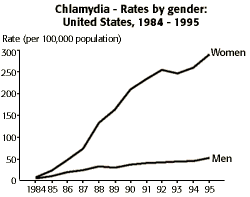
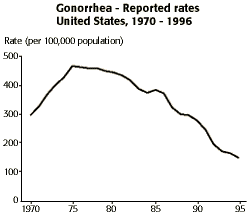

Sexually Transmitted Diseases Problem Set
Problem 9: Increase in Cause of Fertility Problems
| Which of the following STDs that can cause fertility problems increased dramatically during the last decade or so? |
Tutorial
Cause of infertility| Chlamydia and gonorrhea, if left untreated, may cause permanent damage to the reproductive organs leading to infertility. According to the Division of STD Prevention, Sexually Transmitted Disease Surveillance, chlamydia in American women has increased dramatically since 1984 while gonorrhea has been decreasing steadily since about 1975. |
|
Chlamydia
"From 1984 through 1995 reported rates of chlamydia increased dramatically, from 3.2 cases per 100,000 population to 182.2. Trends continue to reflect primarily increase screening, recognition of asymptomatic infection (mainly in women), and improved reporting capacity rather than true trends in disease incidence." |
 |
|
The large difference between the genders "is mainly due to increased detection of asymptomatic infection in women through screening. The low rates in men suggest that many of the sex partners of women with chlamydia are not diagnosed or reported. In addition, men diagnosed as having non-gonococcal urethritis are treated, but frequently are not tested specifically for chlamydia. A large proportion of these men are infected with chlamydia, but they are not detected by surveillance systems based on laboratory reporting of positive chlamydia tests."
|
|
|
Gonorrhea
"In 1995, 392,848 cases of gonorrhea were reported in the United States. The rate of gonorrhea has continued its overall decline since 1975. Between 1994 and 1995 the rate decreased from 165.1 cases per 100,000 population to 149.5" |
 |
| - Division of STD Prevention. Sexually Transmitted Disease Surveillance, 1995. U.S. Department of Health and Human Services, Public Health Service. Atlanta: Centers for Disease Control and Prevention, September 1996. | |


University of Arizona
Tuesday, December 2, 1997
Contact the Development Team
http://www.biology.arizona.edu
All contents copyright © 1997. All rights reserved.